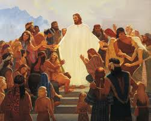

|

|
Book of Mormon
This is definitely the book of scripture I've read the most. Mormon did an amazing job making sure the Book of Mormon focuses soley on Christ. Because the english version has only been translated once, we get all of the messages with none added in. There's a lot of common lessons I focus on, like repentance and Alma the Younger, missing the less common lessons, like how to teach your kids with Alma the Younger.
|